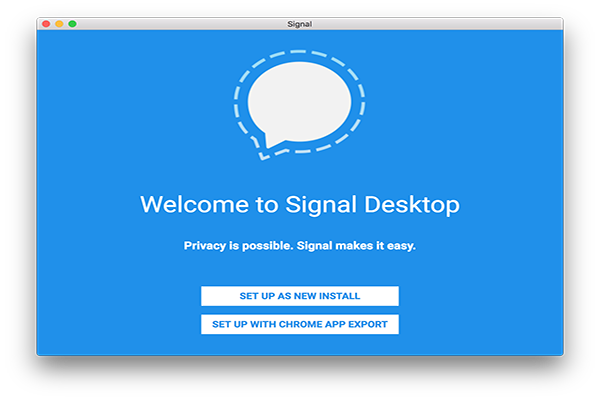
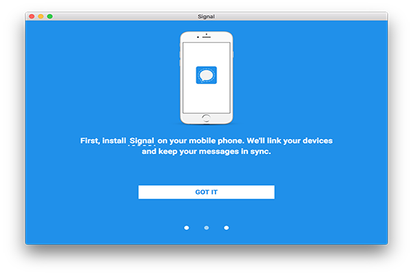
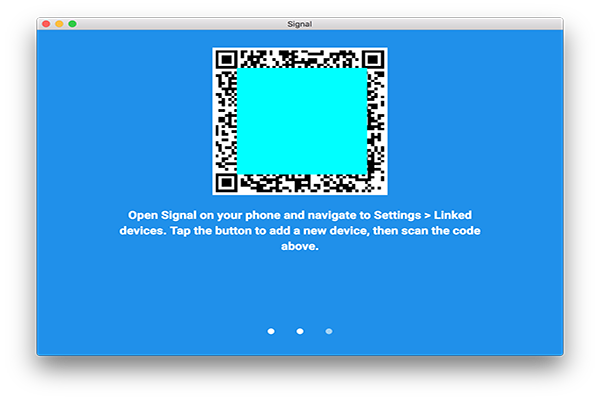

Signal for desktop allows you to send and receive messages on your computer, the same security levels remain and you can comfortly chat using your full desktop keyboard. If you start a conversation on the desktop and need to move around, just pick up your phone and continue messaging from there.
Go to and select Desktop according to your OS, follow the steps to install according to your OS. When the installation is over launch the program.
Choose Set up as new install
Confirm you have installed and registered Signal on your phone
Open signal con your phone and navigate to [Parameters > Linked devices]. Use your phone to scan the Signal Desktop QR Code. Type a name for the device you just added. Confirm your phone number and click Ok
Wait 'till the synchronization finishes
Name the version of Signal dektop. This name will appear on your phone under [Signal > Parameters > Linked devices]
On mobile you can start to search for a contact name or enter a phone number to start the conversation.
You‘re done!